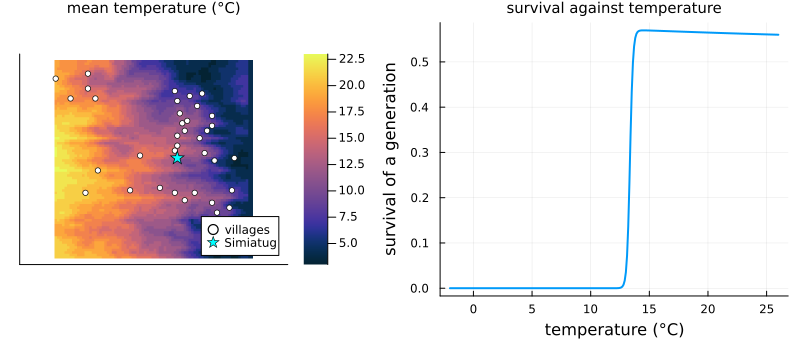
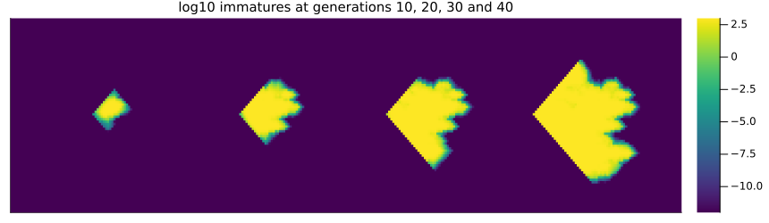
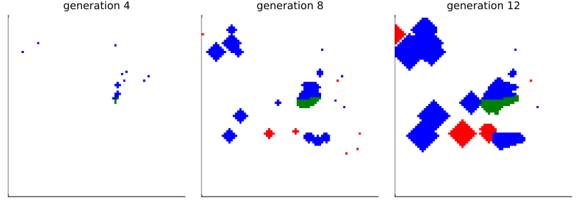
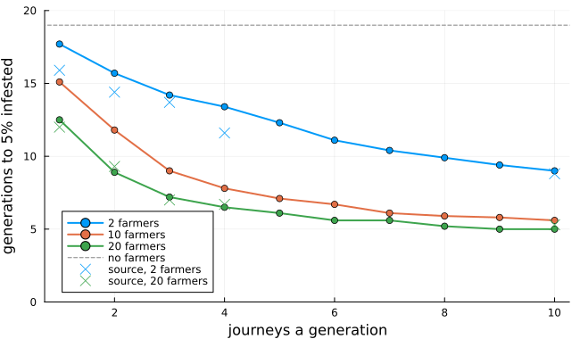
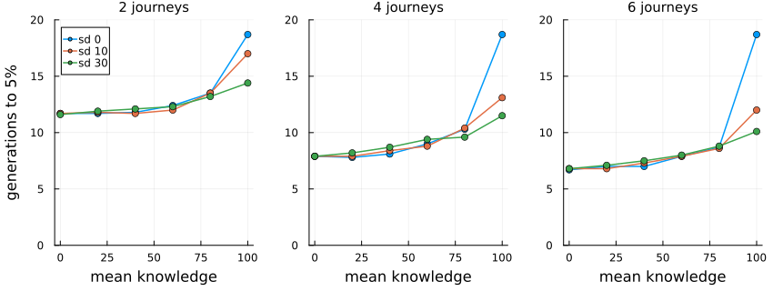

Potato moths and farmers
Simon Frost
- Overview
- The valley
- The moths alone
- Farmers carrying moths
- Journeys and farmers
- Where carriers go
- Pest control knowledge
- Deviations from the source
Overview
The Guatemalan potato tuber moth, Tecia solanivora, reached Ecuador in 1996 and spread through the Andes. Its larvae feed in potato tubers, and farmers move it over long distances in the sacks of seed potatoes they buy and carry between villages. Rebaudo et al. (2011) coupled a cellular automaton of the moth in the Simiatug valley to farmer agents, and asked how farmers’ travel and their knowledge of pest control speed its invasion. They used the model in workshops with the farmers themselves.
This implementation is a reproduction of the model the authors published as NetLogo code, with its landscape. That code is a simplified version of the model their article describes, and the two differ in several rules, listed at the end. One detail matters for the comparisons below: the article measures invasion speed as the generations until 5% of the cells are infested, but does not say what makes a cell infested.
ENV["GKSwstype"] = "100"
using EcologicalCellularAutomata
using CellularAutomataCore
using Plots
using StatisticsThe valley
The landscape is 80 × 80 cells of 500 m, with 37 village cells. Simiatug, where the moths start, is the largest (the code gives it 3000 people and every other village 500, figures its authors call invented):
land = potato_moth_landscape()
villages = findall(>(0), land.population)
p1 = heatmap(permutedims(land.temperature); c=:thermal, aspect_ratio=1,
title="mean temperature (°C)", titlefontsize=10, xticks=false, yticks=false)
scatter!(p1, [I[1] for I in villages], [I[2] for I in villages]; color=:white, ms=3,
label="villages")
scatter!(p1, [50], [41]; color=:cyan, marker=:star5, ms=7, label="Simiatug")
p2 = plot(-2:0.1:26, t -> potato_moth_survival(t, defaults(build(:potato_moth_farmers)));
xlabel="temperature (°C)", ylabel="survival of a generation", label="",
lw=2, title="survival against temperature", titlefontsize=10)
plot(p1, p2; layout=(1, 2), size=(800, 340), left_margin=3Plots.mm, bottom_margin=3Plots.mm)
Moths survive a generation only above about 13 °C, so the cold heights of the valley, and Simiatug itself at 12 °C, hold almost none.
The moths alone
Each generation, a share of the immatures dies, half of the survivors are gravid females, farmers kill 10% of these, 30% of them fly to the four neighbouring cells, and those in a cell lay the next generation’s immatures, up to a ceiling of 1000. Without farmers the moths spread only by flight:
alone = solve(problem(:potato_moth_farmers; farmers=0, generations=40); saveat=10)
heatmap(hcat([permutedims(log10.(u.immature .+ 1e-12)) for u in alone.u[2:end]]...);
c=:viridis, clims=(-12, 3), xticks=false, yticks=false, size=(860, 250),
title="log10 immatures at generations 10, 20, 30 and 40", titlefontsize=10)
The moths spread a cell a generation, and build up only where it is warm. Every cell they reach keeps some moths, however few, so what counts as infested decides how soon 5% of the valley is:
baseline = problem(:potato_moth_farmers; farmers=0)
[(threshold=h, generations=potato_moth_invasion_time(baseline; threshold=h))
for h in (0, 1e-6, 0.01, 1, 10)]5-element Vector{NamedTuple{(:threshold, :generations)}}:
(threshold = 0, generations = 13)
(threshold = 1.0e-6, generations = 17)
(threshold = 0.01, generations = 18)
(threshold = 1, generations = 19)
(threshold = 10, generations = 19)Counting any moths, as the code’s stopping rule does, takes 13 generations; counting a cell from one immature, 19. The article’s baseline is about 16.
Farmers carrying moths
Each generation the farmers make several journeys between villages. A farmer at a cell with moths buys infested seed potatoes unless its pest control knowledge protects it; a farmer carrying moths leaves 90 immatures in any cell without them. In the code every farmer buys infested potatoes. Half the farmers are a red team, half a blue one, and a cell keeps the colour of whoever first brought it moths:
prob = problem(:potato_moth_farmers; farmers=10, moves=4, seed=2, generations=12)
run = solve(prob; saveat=4)
colours = cgrad([:white, :green, :red, :blue], 4; categorical=true)
plot([heatmap(permutedims(u.source .* (u.immature .> 1)); c=colours, clims=(0, 3),
aspect_ratio=1, colorbar=false, xticks=false, yticks=false,
title="generation $(Int(t))", titlefontsize=10)
for (t, u) in zip(run.t[2:end], run.u[2:end])]...; layout=(1, 3), size=(820, 290))
Cells with more than one immature, coloured by where their moths came from: flight from the first infestation (green) or a farmer of either team. Farmers plant new foci across the warm part of the valley, which then grow and merge.
potato_moth_counts.(run.u)4-element Vector{@NamedTuple{infested::Int64, biological::Int64, red::Int64, blue::Int64, carriers::Int64}}:
(infested = 1, biological = 1, red = 0, blue = 0, carriers = 0)
(infested = 65, biological = 39, red = 0, blue = 26, carriers = 5)
(infested = 576, biological = 115, red = 25, blue = 441, carriers = 10)
(infested = 1582, biological = 201, red = 208, blue = 1185, carriers = 10)Journeys and farmers
The article’s Fig. 3 gives the generations to 5% infested for 1 to 10 journeys a generation and 2 to 20 farmers. Ten runs each, counting a cell infested from one immature:
speed(; runs=10, threshold=1, kwargs...) =
mean(fetch.([Threads.@spawn potato_moth_invasion_time(
problem(:potato_moth_farmers; seed=s, kwargs...); threshold)
for s in 1:runs]))
moves = 1:10
crowds = (2, 10, 20)
grid = [speed(; farmers=n, moves=m) for m in moves, n in crowds]
plot(moves, grid; marker=:circle, lw=2, label=permutedims(["$n farmers" for n in crowds]),
xlabel="journeys a generation", ylabel="generations to 5% infested",
ylims=(0, 20), size=(650, 380))
hline!([19]; color=:gray, ls=:dash, label="no farmers")
scatter!([1, 2, 3, 4, 10], [15.9, 14.4, 13.7, 11.6, 8.8]; color=1, marker=:x, ms=6,
label="source, 2 farmers")
scatter!([1, 2, 3, 4, 10], [12.0, 9.3, 7.0, 6.7, 5.3]; color=3, marker=:x, ms=6,
label="source, 20 farmers")
The crosses are read from the article’s Fig. 3. As there, farmers speed the invasion most over the first few journeys, after which more journeys change little, and more farmers speed it further. With 20 farmers the times agree with the article’s at every number of journeys, and with 2 farmers at 10 journeys. With 2 farmers making fewer journeys they are half a generation to two generations longer, as the spread by flight alone is three (19 generations against the article’s 16): the article’s moths spread faster on their own.
With 10 farmers making 4 journeys, the article’s intermediate case, the invasion is more than twice as fast as by flight alone, as the article finds:
(farmers_10_moves_4=grid[4, 2], no_farmers=19)(farmers_10_moves_4 = 7.8, no_farmers = 19)Where carriers go
The code sends a farmer at a cell with moths to the village that minimises its population times its distance: in effect the nearest small village. The article’s Fig. 4 counts the villages visited by farmers carrying moths, and finds nearly all visits at Simiatug and the village nearest it (about 0.46 and 0.41). Here, over 20 generations of ten runs with 10 farmers making 4 journeys, counting where carriers stand at the end of each generation:
function stops(; runs=10, generations=20)
visits = zeros(Int, 80, 80)
for s in 1:runs
integ = init(problem(:potato_moth_farmers; farmers=10, moves=4, seed=s,
generations); save_everystep=false)
for _ in 1:generations
step!(integ)
for I in eachindex(integ.u.carriers)
visits[I] += count_ones(integ.u.carriers[I])
end
end
end
return visits
end
visits = stops()
shares = sort([(village=land.village[I], cell=Tuple(I),
share=round(visits[I] / sum(visits); digits=3)) for I in villages];
by=x -> -x.share)
(simiatug=only(filter(x -> x.cell == (50, 41), shares)).share, most_visited=first(shares, 4))(simiatug = 0.007, most_visited = [(village = 23, cell = (54, 56), share = 0.062), (village = 15, cell = (49, 44), share = 0.06), (village = 22, cell = (52, 55), share = 0.059), (village = 20, cell = (62, 52), share = 0.058)])This does not reproduce the article’s figure. The visits spread over many villages, none taking more than about 6%; Simiatug, in the cold where moths barely survive, takes little. As the moths spread, carriers stand in cells with moths throughout the warm part of the valley, and the nearest-village rule sends them back and forth between neighbouring villages everywhere. The article does not give the settings of its Fig. 4, and may have counted its visits early in a run, before the moths had spread.
Pest control knowledge
The article’s Fig. 5 varies the farmers’ pest control knowledge: its mean from 0 to 100 and its spread (standard deviation) from 0 to 30, with 2, 4 or 6 journeys. The code has no such option: every farmer buys infested potatoes. Here knowledge is drawn from a normal distribution, kept within 0 and 100, and a farmer buys infested potatoes with probability 1 - knowledge/100. The article gives no rule, and does not say how many farmers it used; we use 10.
means = 0:20:100
spreads = (0, 10, 30)
fig5 = Dict(m => [speed(; farmers=10, moves=m, knowledge=(μ, σ), infection=:probability)
for μ in means, σ in spreads]
for m in (2, 4, 6))
plot([plot(means, fig5[m]; marker=:circle, lw=1.5, ylims=(0, 20),
label=permutedims(["sd $σ" for σ in spreads]), legend=m == 2 ? :topleft : false,
xlabel="mean knowledge", ylabel=m == 2 ? "generations to 5%" : "",
title="$m journeys", titlefontsize=10) for m in (2, 4, 6)]...;
layout=(1, 3), size=(850, 320), left_margin=4Plots.mm, bottom_margin=5Plots.mm)
[(journeys=m, knowledge_0=round(fig5[m][1, 1]; digits=1),
knowledge_100_sd_10=round(fig5[m][end, 2]; digits=1),
knowledge_100_sd_30=round(fig5[m][end, 3]; digits=1),
knowledge_100_sd_0=fig5[m][end, 1]) for m in (2, 4, 6)]3-element Vector{@NamedTuple{journeys::Int64, knowledge_0::Float64, knowledge_100_sd_10::Float64, knowledge_100_sd_30::Float64, knowledge_100_sd_0::Float64}}:
(journeys = 2, knowledge_0 = 11.7, knowledge_100_sd_10 = 17.0, knowledge_100_sd_30 = 14.4, knowledge_100_sd_0 = 18.7)
(journeys = 4, knowledge_0 = 7.9, knowledge_100_sd_10 = 13.1, knowledge_100_sd_30 = 11.5, knowledge_100_sd_0 = 18.7)
(journeys = 6, knowledge_0 = 6.7, knowledge_100_sd_10 = 12.0, knowledge_100_sd_30 = 10.1, knowledge_100_sd_0 = 18.7)The article finds about 10 to 12, 7.4 to 8.4 and 6.4 to 7 generations with no knowledge for 2, 4 and 6 journeys, rising with knowledge to about 13.5 to 15.4, 11.8 to 13.8 and 9.7 to 12.2 at a mean of 100 with some spread. The runs here agree, except with 2 journeys and a small spread of knowledge (17 generations against at most 15.4). As in the article, low knowledge nearly doubles the speed of invasion, the spread of knowledge matters little except at high knowledge, and a single farmer of low knowledge among knowledgeable ones speeds the invasion considerably: with every farmer’s knowledge at 100 nobody carries moths, and the invasion is that of flight alone (19 generations here, 16 in the article).
Deviations from the source
foreach(d -> println("- ", d), model_info(:potato_moth_farmers).deviations)- The model follows the authors' published NetLogo code (CoMSES 2278, version 1.1.0), which its header calls a simplified version of their model. It departs from the article's ODD: gravid females disperse independently of density (30% to the four neighbours) rather than by Eqs. 7-9; reproduction is a logistic map (rate 5, capacity 1000) rather than temperature-dependent Weibull fecundity; habitat quality, rainfall and potato stores are not used; and farmers kill 10% of gravid females each generation, which the article says is not modelled.
- Farmers choose the village minimising population times distance, as in the code (so mostly the nearest small village), or with probability 0.2 a random one; the article describes a gravity model in which larger villages attract more. Village populations are invented in the source's code.
- In the code, every farmer's knowledge is a whole number from 0 to 99 and a farmer buys infested potatoes if its knowledge is below 100, so every farmer does. For the article's experiments on knowledge, knowledge = (mean, sd) draws it from a normal distribution kept within 0 and 100, and infection = :probability makes a farmer buy infested potatoes with probability 1 - knowledge/100; neither the article nor the code gives this rule.
- The article does not say what makes a cell infested. The code stops when more than 4600 cells hold any moths. Counting any moths, every invasion is 2 to 3 generations faster than the article's; counting cells with more than one immature matches the article's results with farmers but not its baseline without them (19 generations against about 16).
- The number of farmers in the article's Figs 4 and 5 and its replicates are not stated; 10 farmers are used for Fig. 5.
- Fig. 4 is not reproduced: farmers carrying moths stop at many villages, none taking more than about 6% of their stops, rather than mostly at Simiatug and its nearest village (0.46 and 0.41 in the article, whose settings for that figure are not stated).
- NetLogo visits patches and farmers in a random order. A cell that takes the origin of a neighbour's moths takes that of a neighbour chosen at random, which has the same distribution as the code's last writer; farmers act in a fresh random order in each pass.
- The temperature a generation meets is drawn at the end of the previous generation rather than at its start (the same distribution), so that a synchronous rule can compute its neighbours' survivors.
- Farmers start on a random cell, as the code's random coordinates do, and distances are measured between cell centres; the code measures from the farmer's position, which differs only before its first journey.
- The article's main text gives a grid of 1600 cells (20 x 20 km); its appendix and code use 6400 (80 x 80 cells of 500 m, 40 x 40 km), as here.Rebaudo, François, Verónica Crespo-Pérez, Jean-François Silvain, and Olivier Dangles. 2011. “Agent-Based Modeling of Human-Induced Spread of Invasive Species in Agricultural Landscapes: Insights from the Potato Moth in Ecuador.” Journal of Artificial Societies and Social Simulation 14 (3): 7. https://doi.org/10.18564/jasss.1802.